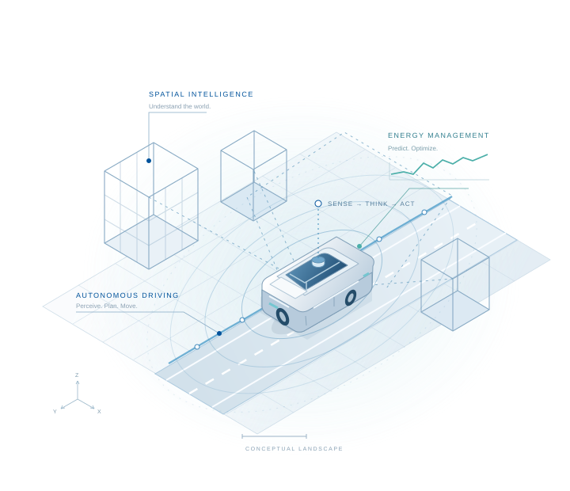

zhang’s group
让智能，
驶向更远。
Intelligence in motion.
围绕新能源汽车自动驾驶、空间智能与人工智能能量管理，探索感知、决策与能源之间的协同。
AUTONOMY / SPACE / ENERGY
CONNECTED INTELLIGENCEFIG. 01

EXPLORING THE NEXT MILE向下探索
01 / ABOUT US
从理解世界，
到驱动未来。
连接智能驾驶、空间认知与能源决策，探索新能源汽车与自主系统的更多可能。
zhang’s group 的研究方向涵盖新能源汽车自动驾驶、空间智能与人工智能能量管理。我们关注这些方向的交叉：让系统更好地理解环境，让行动与能量使用协同起来。
zhang’s group Intelligence in motion
02 / RESEARCH
三个方向，共同探索。
从感知到决策，从空间到能量。
以交叉视角，思考智能移动。
感知理解决策行动
跨越学科边界，连接研究问题。
03 / PUBLICATIONS
研究，持续向前。
论文、项目与开放资源
在这里汇集。
04 / PEOPLE
因为同行，
走得更远。
不同视角，共同的好奇心。
在交流与合作中，让研究发生。
05 / WHAT’S NEW
课题组动态
LET’S EXPLORE TOGETHER
让想法，
在这里相遇。
关注智能驾驶、空间智能与能源管理？
期待围绕共同的研究问题，展开交流与合作。